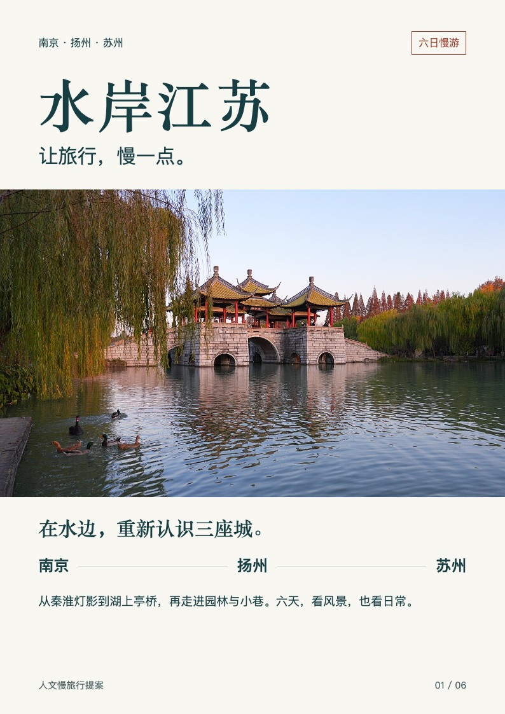
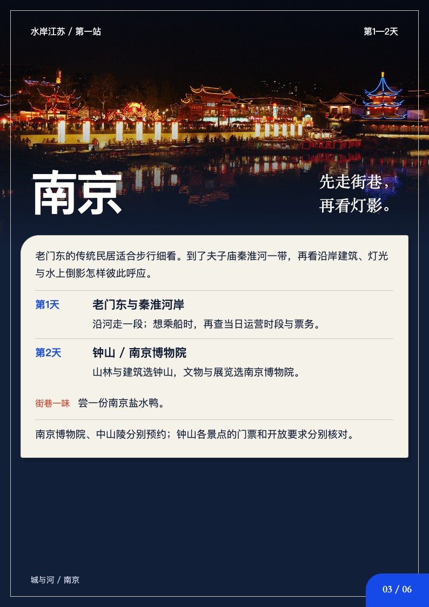
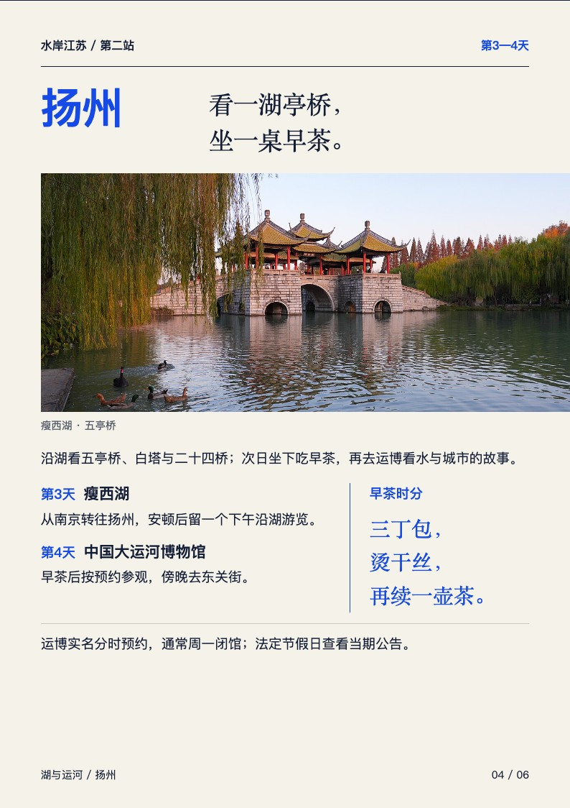
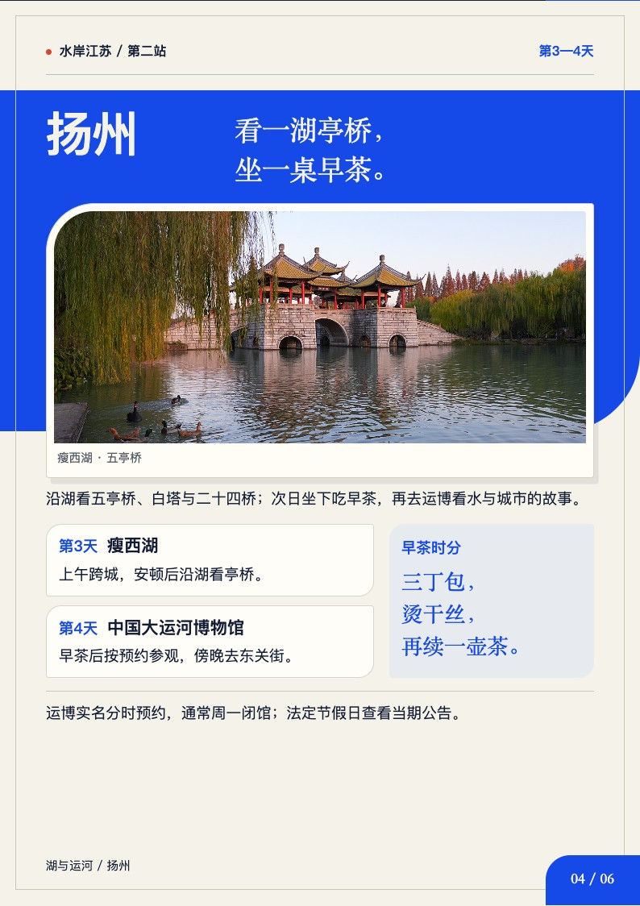
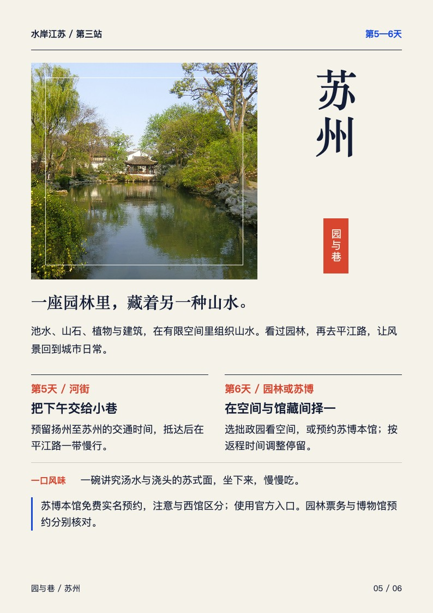
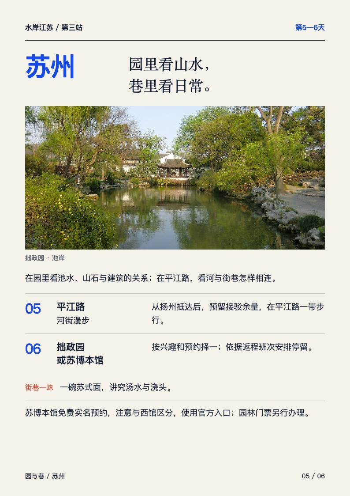

前版 / 资料编排

完成了资料组织与可读性，但没有足够鲜明的主题视觉。
以水线串起三城，插画与大字建立主视觉，再延续到行程与城市页。
查看当前六页 HTML 手册设计思路迁移对照
完成了资料组织与可读性，但没有足够鲜明的主题视觉。

用水线建立记忆点；大胆黑体与版画形成对比，水线延续到三城行程。


保留水线封面与已有资料，用同一张扬州内页比较：字体、图像、色面、阅读面和边角细节怎样共同形成一本册子的语言。

已经安排文字与照片，但前后层次和细节之间的联系还偏薄。

以主视觉、色面和阅读面的关系组织内容，弧角与页边细节延续同一母题。
同一份行程与摄影，比较取景、文字和阅读顺序。三张城市页分别调整叙事，保留大字与手机重排。

竖排城市名、照片框线；正文沿用两栏日程。

横向保留园林空间；行程按阅读顺序展开，图注贴近照片。